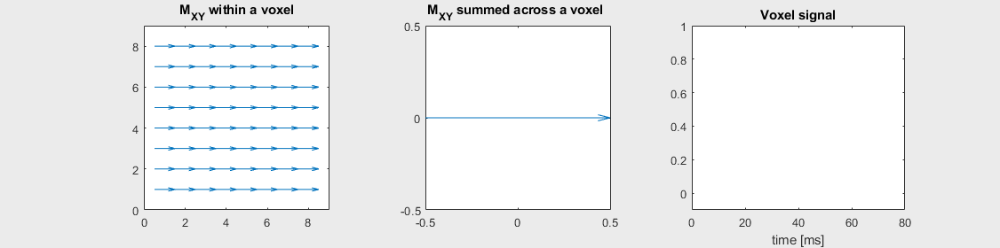

Gradient and Spin Echo Pulse Sequences#
There are two broad classes of pulse sequences used: gradient-echo and spin-echo methods. Gradient-echo sequences use a simpler pulse and acquire acquisition, while spin-echo sequences use an additional RF refocusing pulse that eliminates the effects of off-resonance that are often undesirable.
Learning Goals#
Describe how various types of MRI contrast are created
Describe the difference between gradient and spin echo contrast
Understand the most popular pulse sequences and their acronyms
Identify gradient echo and spin echo pulse sequences
Identify artifacts and how to mitigate them
Understand the effects of off-resonance and \(T_2^*\) on contrast
Gradient Echo Pulse Sequence (GE or GRE)#
The building block of a gradient-echo (GE) pulse sequence includes an RF excitation pulse followed by imaging gradients. A complete 2D imaging sequence is
It is called a “gradient-echo (GE)” since the frequency encoding imaging gradients, shown on \(G_X\), are refocused or canceled out at the echo time (more in Spatial Encoding section). Another name for these sequences is a “gradient-recalled echo (GRE)”.
And using a simplified diagram for the gradient echo sequence:
The gradient-echo pulse sequence exhibits \(T_2^*\) contrast.
Refocusing off-resonance with a spin-echo#
Gradient-echo sequences are sensitive to off-resonance effects and exhibit \(T_2^*\) contrast. However, the effects of off-resonance can be reversed by applying a 180-degree flip angle “refocusing” RF pulse some time after the initial excitation RF pulse. This has the effect of inverting the phase accumulation of off-resonance net magnetizations, after which the off-resonance phase begins to cancel out. This is most easily illustrated in the voxel decay illustrations below:
 |
|
|---|---|
Spin-echo with No off-resonance, \(T_2 = 80\) ms |
|
Spin-echo with Mild off-resonance, \(T_2 = 80\) ms |
Spin-echo with Severe off-resonance \(T_2 = 80\) ms |
The spin-echo does not make any difference when there is no off-resonance.
Can you identify when the 180-degree refocusing pulse was applied? This is when the \(M_{XY}\) reverts its phase.
Simulation for Visualization of refocusing off-resonance#
To simulate and visualize off-resonance, including various refocusing pulse flip angles, try
Scene: Inhomogeneity
Apply 90x hard, then 180y hard - what happens to the dephasing spins?
Apply 90x hard, then 180x hard - this applies the 180-degree pulse at a different angle. Is there still a spin-echo?
Apply 90x hard, then repeated 180s - can multiple spin-echoes be created?
Spin Echo Pulse Sequence (SE)#
The building block of a spin-echo (SE) pulse sequence has an additional 180-degree refocusing pulse between the excitation and data acquisition in order to refocus the effects of off-resonance and create pure \(T_2\)-weighting:
It is called a “gradient-echo (GE)” since the spins are all refocused at the echo time, TE.
This is a simplified diagram for the spin echo sequence:
Because of the refocusing, a spin-echo sequence gives pure \(T_2\) contrast: